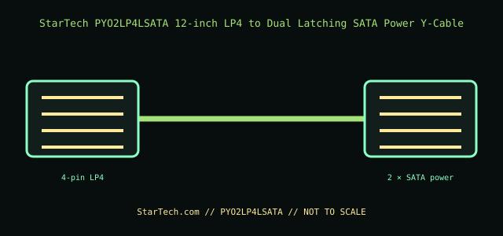

[ INTERNAL PC POWER CABLE // MODEL-SPECIFIC RECORD ]
StarTech PYO2LP4LSATA 12-inch LP4 to Dual Latching SATA Power Y-Cable
StarTech.com manufacturer part PYO2LP4LSATA. This record documents only this specified cable assembly; connector fit is not evidence of a matching pinout or PSU compatibility.

PSU SAFETY: Modular PSU-side cable pinouts are proprietary and model-family-specific. Never substitute a modular cable by brand, connector fit, color, or appearance; use only the exact PSU maker-approved cable for the exact PSU model and revision.
Manufacturer specifications
| Manufacturer part | StarTech.com PYO2LP4LSATA |
|---|---|
| Connector / pin count | One 4-position LP4 (Molex) input to two 15-contact latching SATA power outputs. |
| Wire gauge / length | 18 AWG; 12 in (304.8 mm). |
| Compatible PSU family | A standard LP4 peripheral-power connector from the PSU’s original ATX harness, for two SATA-powered devices. For modular PSUs, use the PSU maker’s own approved harness to the LP4 connection; this Y-cable is not a PSU-side modular cable and is not a license to mix modular leads. |
Power and safety caveats
Splitting one LP4 output does not increase the source harness or PSU capacity. Keep the combined device load within the PSU lead and connector ratings; do not use the cable to power high-draw GPUs or stack adapters. Ensure the SATA latches engage without forcing the drive connector.
Case clearance and routing
The harness is 12 in long. Allow space for the LP4 input, two latching SATA plugs, and separate drive routes; do not tension the Y-branch, trap it behind a drive, or press it against a fan or case panel.
Manufacturer specifications and manuals
- StarTech.com — PYO2LP4LSATA product pageManufacturer part and 12-inch LP4-to-dual-latching-SATA function.
- StarTech.com — PYO2LP4LSATA datasheet (PDF)Manufacturer technical sheet for 18 AWG construction, connector count, and cable length.
Use current manufacturer documentation for exact model revisions and installation. This archive illustration is a connector-identification schematic, not an electrical pinout.